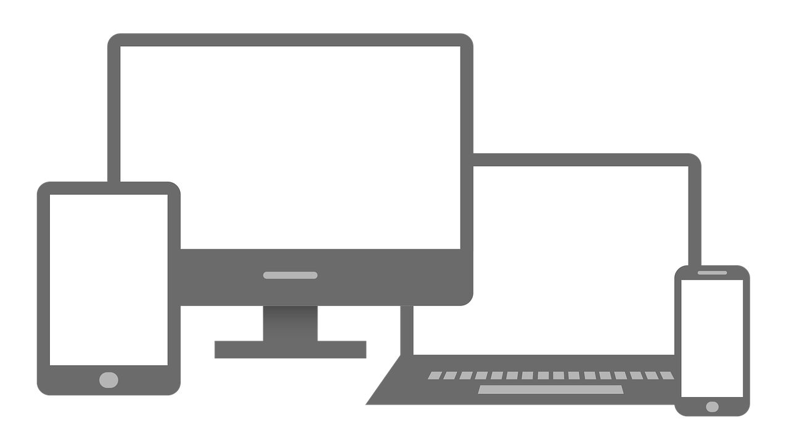

Kilka słów o mnie
Mam na imię Filip (jak widać powyżej), od 8 tygodni ucze się Front-Endu. W pracy zawodowej obsługuję i pisze programy na giętarki krawędziowe. Jest to typowo techniczna praca, wymaga umiejetności czytania dokumentacji technicznej, wyobraźni przestrzennej i co najważniejsze, umiejętności planowania kolejnych kroków. Postanowiłem przenieść te umiejętności na "maszynę" o mnijszych gabarytach.
Dlaczego Front-End?
Zainteresowanie tą dziedziną kiełkowała w mojej głowie naprawdę długo. Zajmowałem się w przeszłości hobbystycznie grafiką komputerową, współpracowałem ze stwoarzyszeniem "Twórców kultury" i moim zadaniem było m.in. przygotowanie plakatów, vlepek czy grafik promujących dany event. Pracowałem w programie Gimp na systemie Linux, którego jestem fanem. Front-end wydaje się naturalnym wyborem i potwierdza to fakt że po 8 godzinach pracy na etacie poświęcam nastepnych kilka na "klikanie" i sprawdzanie "z czym to sie je".
Czego się uczę?

Na obecnym etapie uczę się dostosowywać rozmiar strony do wielkości ekranu na jakim jest wyświetlana (czego efektem jest ta praca). Powtarzam tym samym wcześniejszy materiał, nie korzystam z "gotowców" by samemu obserwować co dzieję się z elementem nad którym pracuje. Podkradam pomysły z innych stron jeżeli chodzi o estetykę ale pliki HTML i CSS piszę samodzielnie i codziennie widzę że coraz żadziej musze zerkać do wcześniej zrobionych zadań by "zmusić" element do danego zachowania.